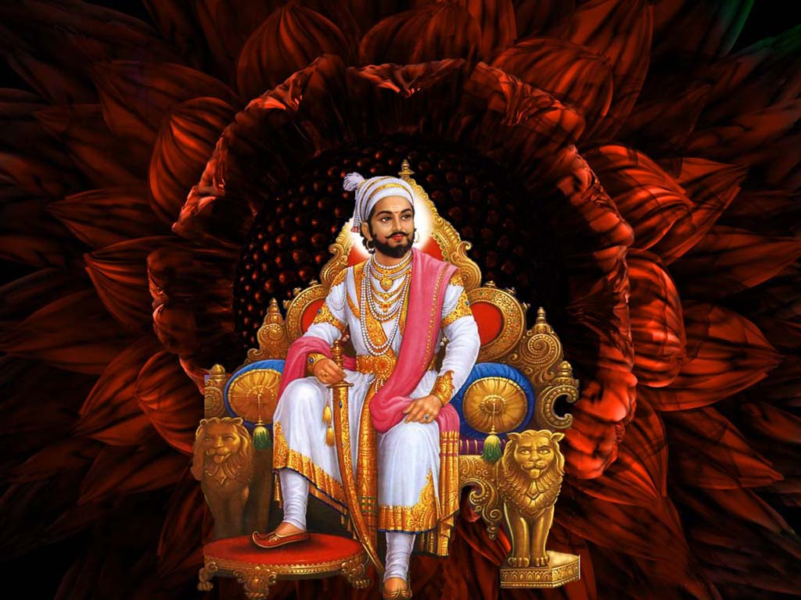
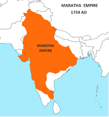

Shivaji maharaj

1627 - Shivaji born in the hill fort of Shivner.
1643-47 - Shivaji overran the hill forts of Kondana, Torana and Raigarh.
1647 - Shivaji's Guardian Dadaji Khondev died.
1656 - Shivaji conquered Javli from Chandra Rao More.
1657 - Shivaji came into conflict with the Moghuls for the first time by making raids into Ahmednagar.
1659 - Afzal Khan of Bijapur was killed by Shivaji.
1660 - Moghul Governor Shaista Khan occupied Pune
1663 - Shivaji made an attack on Shaistakhan's harem and wounded him.
1664 - Shivaji raided and looted Surat.
1665 - Jai Singh besieged the fort of Purandar and forced Shivaji to sign the treaty of Purandar.
1666 - Shivaji escaped from Agra.
1670 - Shivaji attacked Surat for the second time.
1674 - Shivaji crowned himself at Raighad and assumed the title of Maharaja Chhatrapati.
1676 - Shivaji's last campaign against Jijapuri Karnataka. Captured Jinji and Vellore.
1680 - Shivaji died.
"For more information"

Jay bhavani jay Shivaji